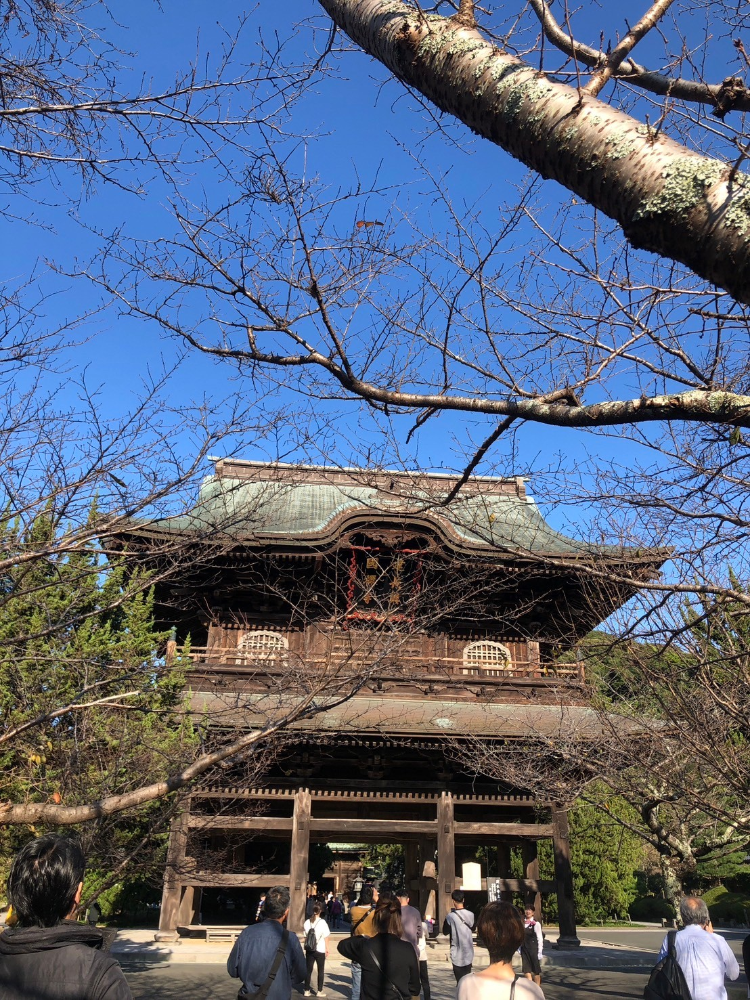
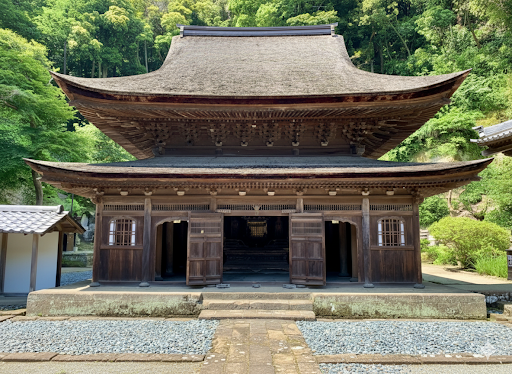
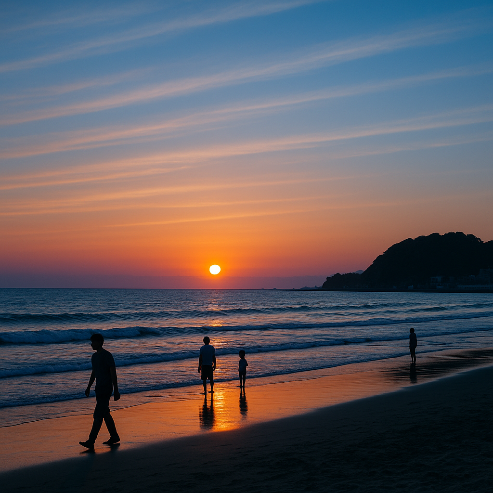
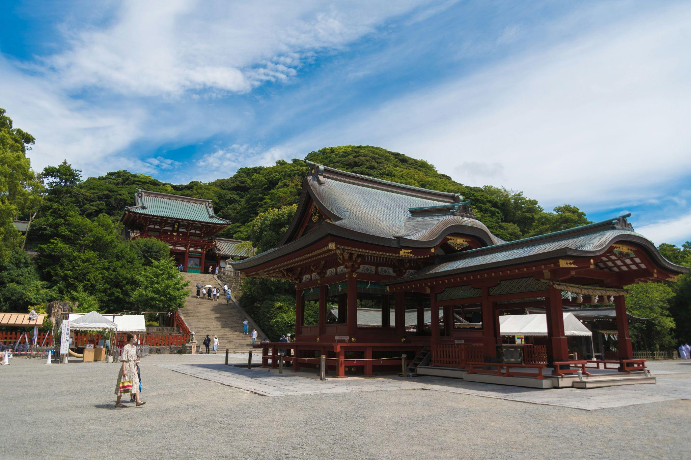
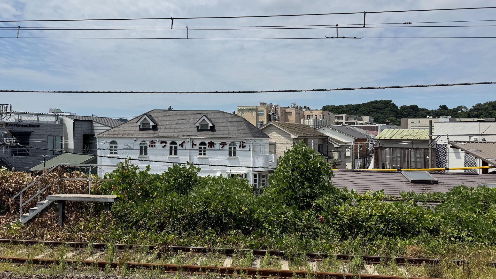

鎌倉の魅力とホワイトホテルの日常をお届けします

2025年9月15日
鎌倉五山第一位の建長寺から半僧坊へ。天園ハイキングコースで初秋の涼風と相模湾の絶景を楽しむ散策ガイド。

2025年9月5日
北鎌倉の円覚寺を早朝に訪問。秋支度が始まった境内の静けさ、国宝・洪鐘の鐘の音、坐禅体験の魅力をご紹介。

8月末の由比ヶ浜で味わう夕暮れの絶景。夏の名残と秋の気配が交差する砂浜を海風に吹かれながら散歩する旅。

源氏池の蓮の花、大石段からの鎌倉一望、夏のぼんぼり祭り。800年の歴史が息づく鶴岡八幡宮の見どころ案内。

2025年8月28日
若手建築家チームが引き継いだ築50年のホテル。リノベーション前の期間限定オープンの想いと、これからの展望。